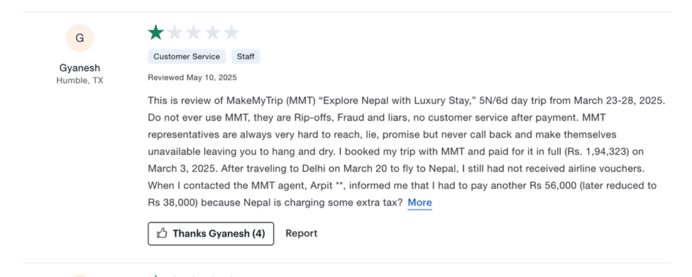
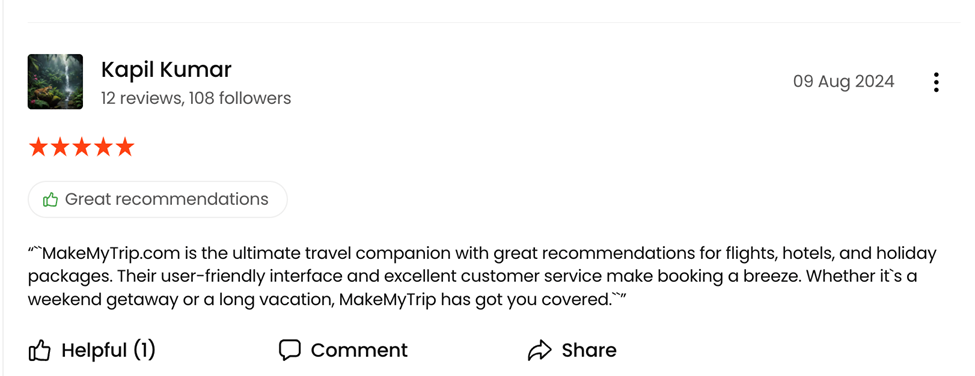
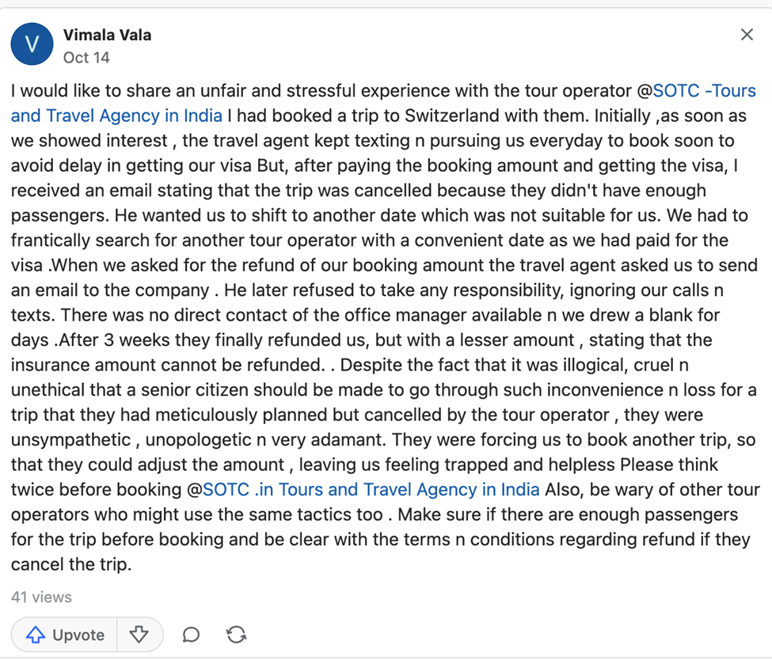

Primary Data
Video reviews from customers of our competitors.
Customer Reviews
Prajwal Shevante (GT Holidays Customer)
“I travelled with GT Holidays last year and honestly, they handled everything really well from flights to hotel bookings and sightseeing. I liked how organized and stress-free the whole trip felt. Their staff kept checking in to make sure things were fine, which was nice. But I did feel the trip was a bit expensive for what was offered. Also, the itinerary was too fixed I wanted to explore on my own, but there wasn’t much flexibility. Overall, they’re great for people who want everything planned out, but not ideal if you like customizing your trips.”
Riya Paul (SOTC Customer)
"I booked my Europe trip with SOTC, and they’re definitely reliable. The hotels and guides were really good, and the whole group tour was smooth. I liked how everything was managed without me having to stress about details. But the only issue was that it felt too structured I couldn’t change or add anything to my itinerary once it was confirmed. Even getting quick help for small changes took time. So while it’s good for families and first-time travelers, it’s not very flexible for someone who likes more freedom during travel."
Tanmay Dhole (Thomas Cook Customer)
“I’ve booked with Thomas Cook a couple of times, and what I really like is their professionalism. You feel safe and taken care of, especially when traveling abroad. Their payment options are convenient too. But honestly, it feels a bit too commercial like they’re more focused on selling packages than understanding what you personally want. Communication between their teams could also be smoother. I’d still say they’re reliable, just not very personal or flexible.”
Secondary Data
Analysis of competitor companies based on available data.
1. MakeMyTrip (MMT)
• Numerous customers report major issues with customer service, refund processing, and misleading bookings.
User on Reddit: “Makemytrip didn’t book tickets and left me to book tickets at higher prices.”
Key issues: Lack of trust, poor support, booking failures.
Opportunity for Travellence: Emphasize transparent pricing, reliable bookings, and strong human support.
 
2. SOTC Travels
• Customer complaint on TripAdvisor: “SOTC is not good at all. Once you pay money in advance they do not plan and provide good service. All they want is customer money.”
• Another Reddit post: “SOTC revoked an agreed tour, changed the price of a revised tour, charged additional processing fees, then refused to return an advance of 76k.”
Key issues: Rigid packages, lack of transparency, refund and modification problems.
Opportunity for Travellence: Highlight flexibility, customization, and clear terms.
3. GT Holidays
• JustDial review: “We got very worst experience in triangle trip. Most of the people got vomiting and dysentery. We were not satisfied by GT travel.”
• TripAdvisor review: “Booked GT holidays for 4 nights/5 days Golden Triangle tour … Complete mess starting from day 1 and I will never go again.”
Key issues: Poor on-ground execution, health/safety concerns, poor service organization.
Opportunity for Travellence: Emphasize quality control, health & safety oversight, reliable partners.